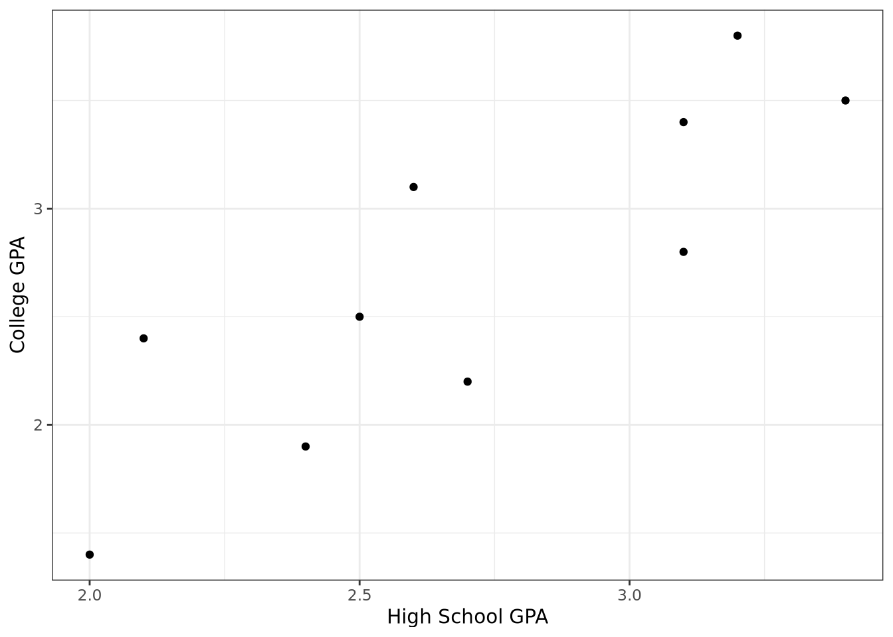

Last modified on August 15, 2023 11:01:37 Eastern Daylight Time
Correlation
The correlation coefficient, denoted by \(r\), measures the direction and strength of the linear relationship between two numerical variables. Is is given by the equation
\[\begin{equation}
\label{eq-cor}
r = \frac{1}{(n-1)}\sum_{i=1}^n\left(\frac{x_i - \bar{x}}{s_x}\right)\left(\frac{y_i - \bar{y}}{s_y}\right)
\end{equation}\]
Following are the high school GPAs and the college GPAs at the end of the freshman year for ten different students from the Gpa data set of the BSDA package.
hsgpa
collgpa
2.7
2.2
3.1
2.8
2.1
2.4
3.2
3.8
2.4
1.9
3.4
3.5
2.6
3.1
2.0
1.4
3.1
3.4
2.5
2.5
Create a scatterplot and then comment on the relationship between the two variables.
R Code
library(tidyverse)library(BSDA)ggplot(data = Gpa, aes(x = hsgpa, y = collgpa)) +labs(x ="High School GPA", y ="College GPA") +geom_point() +theme_bw()

Figure 1: Scatterplot of College GPA versus High School GPA
The college GPA is the response variable and is labeled on the vertical axis. The scatterplot in Figure 1 shows that the college GPA increases as the high school GPA increases. In fact, the the dots appear to cluster along a straight line. The correlation coefficient is \(r = 0.844\), which indicates that a straight line is a reasonable relationship between the two variables.
Compute the correlation coefficient using the equation presented earlier.
where \(b_0\) is the \(y\)-intercept and \(b_1\) is the slope of the line. From the equation of the line that best fits the data,
\[\hat{y} = b_0 + b_1x\]
we can compute a predicted \(y\) for each value of \(x\) and then measure the error of the prediction. The error of the prediction, \(e_i\) (also called the residual) is the difference in the actual \(y_i\) and the predicted \(\hat{y}_i\). That is, the residual associated with the data point \((x_i, y_i)\) is